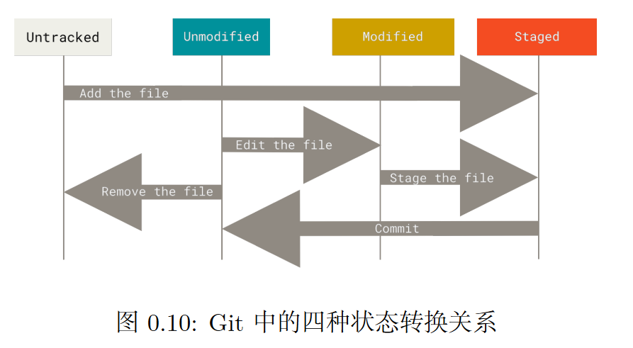
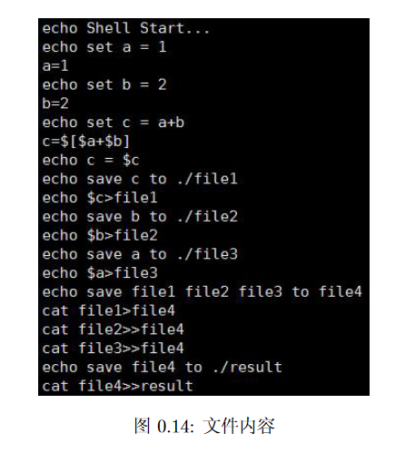

BUAAOS-Lab0 实验报告
思考题
Thinking 0.1
题目太长，就不摘抄了。
对比 $Untracked.txt$ 和 $Stage.txt$ 的内容，可以发现，在对 $README.txt$ 文件进行 git add 之前，该文件处于 Untracked 状态，而在添加后则处于待提交状态，这说明该文件已经被添加到暂存区了。
观察 $Modified.txt$ 文件可以看到修改文件后，$README.txt$ 处于 Modified 状态，这是工作区文件和暂存区文件不一致造成的。
Thinking 0.2
题目如下：
仔细看看0.10，思考一下箭头中的 add the file 、stage the file 和commit 分别对应的是 Git 里的哪些命令呢？
箭头 $Add the file$ 对应的git命令是：git add；
箭头 $Stage the file$ 对应的git命令依然是：git add [filename]；
箭头 $Commit$ 对应的git命令是：git commit。
Thinking 0.3
题目如下：
1. 代码文件 print.c 被错误删除时，应当使用什么命令将其恢复？
2. 代码文件 print.c 被错误删除后，执行了 git rm print.c 命令，此时应当
使用什么命令将其恢复？
3. 无关文件 hello.txt 已经被添加到暂存区时，如何在不删除此文件的前提下
将其移出暂存区？
解答如下：
- 此时该文件只是被从工作区删除，而仍旧存在于暂存区。我们只需要使用命令
git checkout -- print.c将文件从暂存区恢复至工作区即可。 - 此时工作区和暂存区的 $print.c$ 文件均已被删除，此时应当使用命令
git reset HEAD print.c来将文件从HEAD所指的提交版本中将文件恢复； - 使用命令
git rm --chached hello.txt命令以从暂存区删除 $hello.txt$。
Thinking 0.4
题目太长不摘抄了。
通过使用git reset --hard <hash>可以回退到哈希值指定的版本，而使用git reset --hard HEAD^则可以回退到前一个版本。
注意！ 在使用git reset --hard时需要注意是否将当前工作区内容做了提交，因为该命令会将工作区 所有未提交内容覆盖掉。
Thinking 0.5
题目如下：
执行如下命令, 并查看结果：
1 | echo first |
最终的运行结果为：
- 命令行打印了一行 $first$ 字符串；
- $output.txt$ 文件内容为：
1 | third |
并没有出现字符串$second$，这是由于命令echo third > output.txt覆写了命令echo second > output.txt向文件写入的内容。
Thinking 0.6
题目如下：
使用你知道的方法（包括重定向）创建下图内容的文件（文件命名为 test），
将创建该文件的命令序列保存在 command 文件中，并将 test 文件作为批处理文件运行，
将运行结果输出至 result 文件中。给出 command 文件和 result 文件的内容，并对最
后的结果进行解释说明（可以从 test 文件的内容入手）. 具体实现的过程中思考下列问
题: echo echo Shell Start 与 echo ‘echo Shell Start’效果是否有区别; echo echo
$c>file1 与 echo ‘echo $c>file1’效果是否有区别.

对于 $command$ 文件的编写，我们只需要先使用touch命令创建$test$文件，并将图0.14所示的文件每一行的字符串(设为$string[i]$)以命令echo 'string' >> test向 $test$文件写入即可。
echo echo Shell start命令的效果与echo 'echo Shell Start' 命令的效果是相同的，而 echo echo $c>file1 与 echo 'echo $c>file'命令效果则是不同的，前者的作用是利用重定向向 $file1$ 文件写入字符串 $echo $c$，而后者则是在命令行中输出字符串 $echo $c>file$。
本次实验的难点
本次实验中唯一卡住我的是 $Exercise 0.4$ 的第二问。说句实话对于 $Makefile$ 的介绍我觉得无论是Pre教程还是实验指导书都显得有些贫瘠。
在查阅了一些相关资料之后发现这题其实很好做，大致流程就是用gcc -c把子目录里面的两个C文件编译成.o文件，再在顶层目录把子目录下两个.o文件用gcc -o连接成可执行文件。
其中比较难的有两个点：
其一是如何让处于./code文件夹下面的两个包含了<fibo.h>头文件的.c文件在编译时知道自己要包含的头文件在../include文件夹下面，这个问题可以通过gcc的-I参数解决，具体代码如下(./code/Makefile)：
1 | # 对于fibo.c |
其二则时如何让顶层目录下的make命令调用子目录的make命令，这个问题我是通过make命令的-C参数解决的，具体代码如下：
1 | make -C ./code/ |
这个命令会调用./code文件夹下的make命令。
实验体会
这次Lab0的体会用一句话概括就是：好用的工具太多，我会的太少。从git到make再到vim，直到做完这个lab感觉也只是懂得一些皮毛的东西，应该有很多有意思的特性值得去深挖。
没什么多说的，keep humble keep hungry，虚心学下去就好。